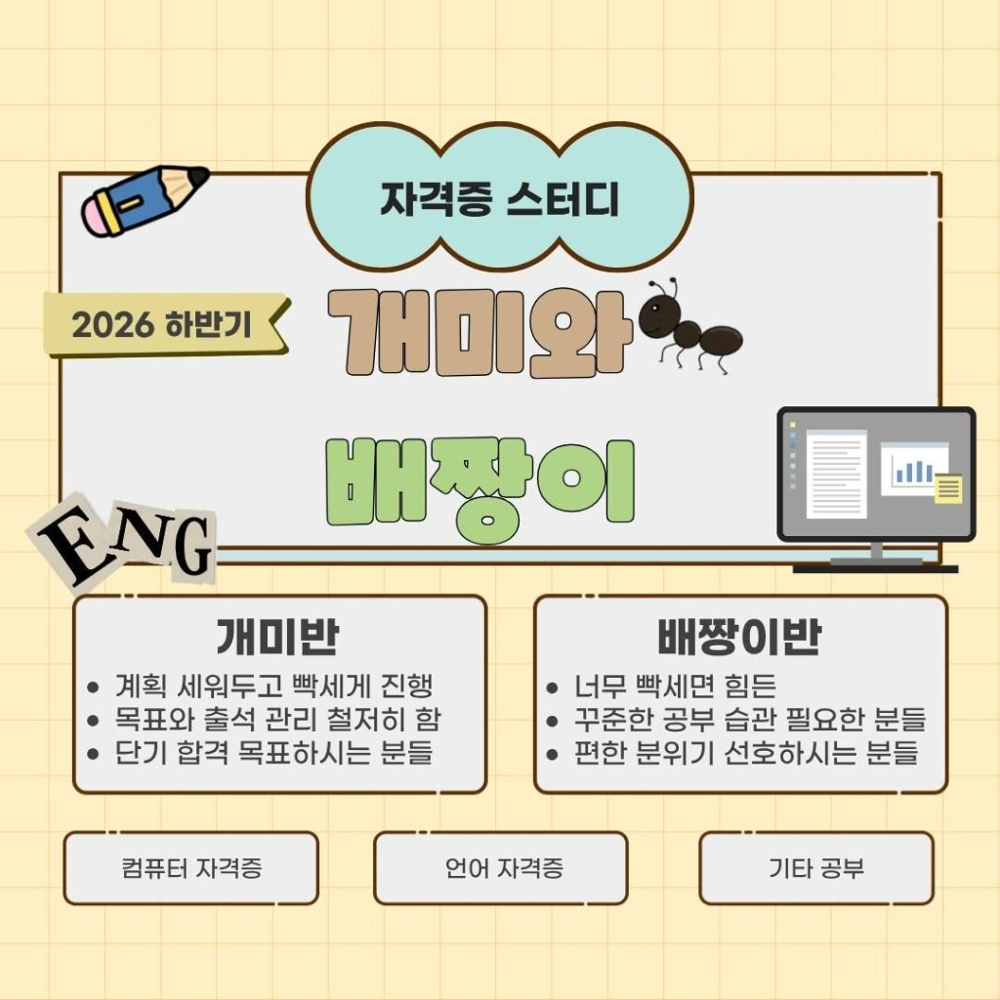

(서울 20대 대학생 · 대학원생 대상)
혼자 공부할 때보다 사람들과 같이 할 때 능률 오르시는 분들 환영합니다! 방학 동안 자격증 하나도 못 딴 사람... 지금이 기회입니다. 자격증도 따면서 새로운 사람들 알아가보고 싶은 분들, 올해 뭐라도 따봐야겠다 싶은 분들 함께 해요🫶🏻💪🏻
🚨개미와 배짱이는 종교, 시민 단체와 무관합니다.
다 같이 만나서 공부하는 만큼 스터디 장소와 조 편성을 맞추기 위해 평소 활동하는 지역을 알려주세요! (예: 서울대입구역 / 신촌역 / 홍대역 등)
원활한 일정 조율 및 면접 안내를 위해 실제로 연락 가능한 번호를 입력해주세요. 📞 (면접 안내 외 목적으로 사용되지 않습니다)
예: 9월 중 / 10월 TOEIC / 아직 미정
* 조 배정용으로 사용됩니다.
예: 70% 개미 + 30% 배짱이